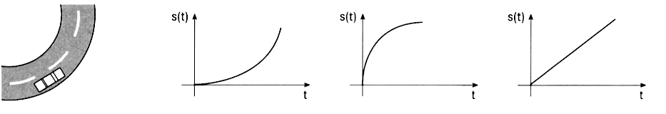
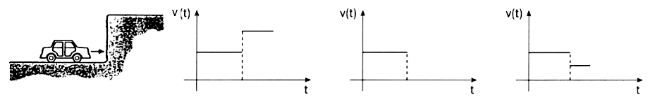
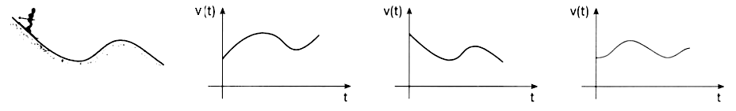
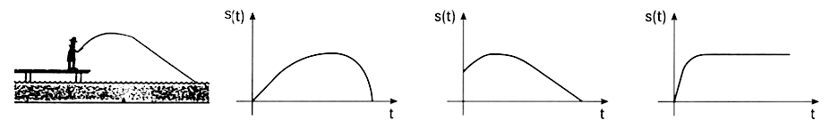
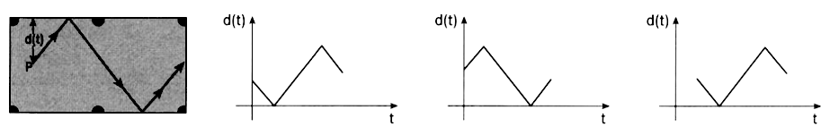
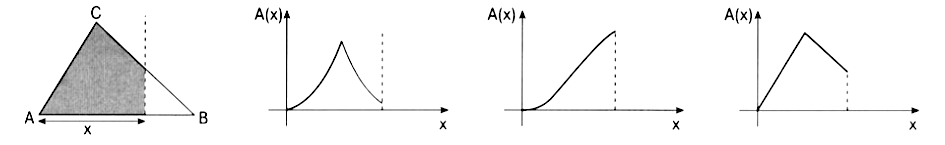

Welcher Graph beschreibt die jeweilige Situation am besten?
a) Auto mit konstanter Geschwindigkeit. $s(t)$ ist der Weg.

Graph 3. Bei konstanter Geschwindigkeit wächst der Weg linear mit der Zeit ($s = v \cdot t$). Das entspricht einer Geraden durch den Ursprung. Auch wenn das Auto durch eine Kurve fährt, ändert das nichts an der konstanten Geschwindigkeit.
b) Auto-Geschwindigkeit $v(t)$.

Graph 2. Das Auto fährt konstant, wird dann abrupt abgebremst und steht dann still.
c) Skifahrer fährt Hang herunter. $v(t)$ ist die Geschwindigkeit.

Graph 1. Die Geschwindigkeit nimmt durch das Gefälle stetig zu, flacht aber aufgrund des Luftwiderstands in der Zunahme etwas ab. Durch eine leichte Steigung am Ende verringert sich die Geschwindigkeit wieder etwas. Danach nimmt sie wieder zu.
d) Angler wirft Angel. $s(t)$ ist die waagrechte Entfernung.

Graph 2. Der Haken entfernt sich schnell, wird in der Luft durch den Widerstand/Schnurzug leicht abgebremst und bleibt nach dem Eintauchen in einer bestimmten Entfernung. Durch konstantes Einholen der Schnur nimmt die Entfernung konstant ab.
e) Kugel-Abstand $d(t)$ vom oberen Rand.

Graph 1 oder 3. Der Abstand verringert sich erst bis zur Bande und nimmt nach dem Abprall wieder gleichmässig zu.
f) Flächeninhalt $A(x)$ bei Verschieben der Linie.

Graph 2. Die Fläche nimmt stets zu, auch wenn die gestrichelte Linie kürzer wird.